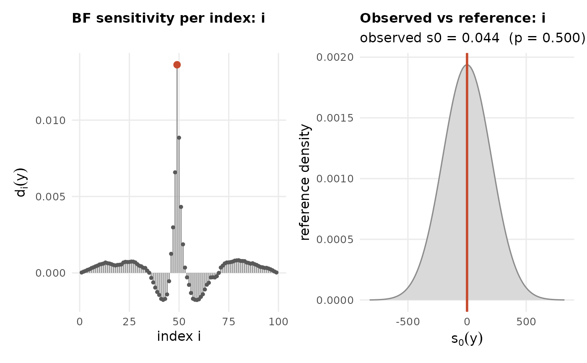

Check the latent Gaussian assumption of an INLA fit.
Usage
ng.check(
fit,
selection = NULL,
components = NULL,
compute.fixed = TRUE,
compute.random = FALSE,
plot = TRUE
)Arguments
- fit
An `inla` object fitted with `control.compute = list(config = TRUE)`.
- selection
Optional named list of components to check (default: all random).
- components
Optional operator overrides (e.g. SPDE), as in [ngvb()].
- compute.fixed
If `TRUE`, also return the sensitivity of each fixed effect to each component's non-Gaussianity parameter.
- compute.random
If `TRUE`, also return, for each checked component, the sensitivity of *its own* posterior mean at every node to its own non-Gaussianity – i.e. how much each node's fitted value would move under [ngvb()], estimated from the base (Gaussian) fit alone, without actually fitting the non-Gaussian model. This is the same Bayes-factor-sensitivity theory used for `sens.fixed` (Theorem 2 of Cabral, Bolin & Rue, JRSS-B 2025), applied to the component's own field instead of a fixed effect: it reuses the cross-covariance already computed for `d`, so it costs one extra matrix multiply per hyperparameter configuration, not a refit. Useful as a preview – e.g. mapped over an SPDE mesh – of where a subsequent `ngvb()` fit is expected to change the predictions the most, before actually running it.
- plot
If `TRUE` (default), draw the diagnostic plots (see [plot.ngvb.check()]): per-index Bayes-factor sensitivity, and the observed overall sensitivity against its Gaussian reference distribution.
Value
An object of class `ngvb.check`. Per component, evaluated at the hyperparameter posterior mode \(\hat\gamma\): the BF sensitivity `s0`, the per-index contributions `d`, and (Gaussian response) the reference SD `sd.ref` and `p.value`; the hyperparameter-mixture averages are also kept as `s0.mixture` / `d.mixture`. Plus `sens.fixed` if `compute.fixed = TRUE`, and `sens.random` (a named list, one vector per checked component, aligned with `selection`) if `compute.random = TRUE`.
Examples
# \donttest{
if (requireNamespace("INLA", quietly = TRUE)) {
set.seed(1); n <- 100
x <- cumsum(rnorm(n, sd = 0.3)); x[50:n] <- x[50:n] + 6
y <- x + rnorm(n, sd = 0.4)
LGM <- INLA::inla(y ~ -1 + f(i, model = "rw1", constr = TRUE),
data = data.frame(y = y, i = 1:n),
control.compute = list(config = TRUE))
ng.check(LGM) # small p-value flags departure from latent Gaussianity
}

# }